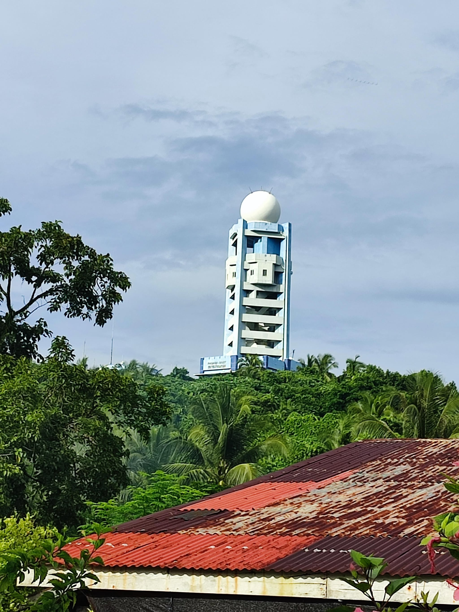

PAGASA-DOST Weather Station
The PAGASA-DOST weather station in Sapao is a practical and important facility for the barangay and nearby communities. Its elevated location helps it monitor changing weather conditions and support disaster preparedness during strong winds, typhoons, and heavy rain.
The station also plays a role in educating residents about weather alerts, rainfall advisories, and climate updates that help fisherfolk, farmers, and families plan their daily activities safely.

Photo gallery


Fees and access
Pricing
There is no regular tourist fee for visiting the area, but access is limited to official or guided visits because the site is a working weather station.
How to get there
From Guiuan town proper, travel toward barangay Sapao and ask local residents or the barangay office for the best route to the station. The site is best reached with a local guide because of its elevated location.
Contact and opening hours
Visits are usually arranged through official channels or with prior coordination. The station is primarily a working facility rather than a conventional tourist destination.